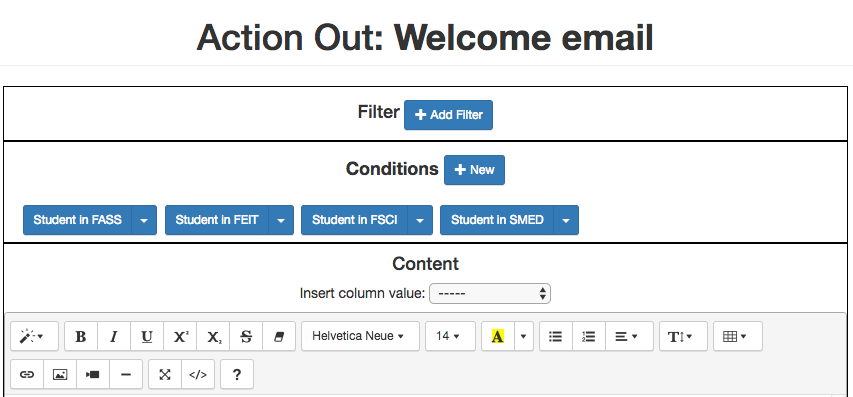
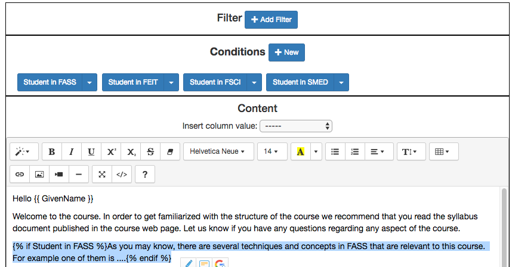

Scenario 2: Send email to all students with tailored text¶
- CSV data file:
Scenario 2 Data File. - Workflow data file:
Scenario 2 Workflow File.
Suppose you have a course with 500 students and they take the course as part of four programs named FASS, FEIT, FSCI, SMED in different disciplines. They are all related, but at the same time different. You would like to send all your students an initial email explaining a few aspects of the course. One paragraph is about the structure of the course and is common to all students. A second one explains the connection between the material and their program. This second paragraph has to change depending on the program in which each student is enrolled. The task consists on drafting one email with a personalised greeting (using the student’s name) a common paragraph, and a second paragraph that changes depending on the program.
Suppose now that you do have the class listing in an excel sheet. The table has the names of the students (one student per row), and the column named Program contains for each student one of four possible values “FASS”, “FSCI”, “FEIT” or “SMED”.
Steps
Create a new workflow (click in the New Workflow button in the home page of the tool). Introduce a name and a description (optional) for this workflow.
Open the newly created workflow by clicking its name. A page titled Workflow Details will be shown.
The page says that there is no data uploaded yet, and to upload it you need to click in the Dataops link either at the bottom of the text or at the context menu at the top.
A new page titled Upload/Merge appears. Select the option CSV Upload/Merge and follow the instructions to upload the
CSV file(select all the columns to upload)Click the Details page to see a summary of the elements in the workflow: 500 rows, 10 columns, 1 action and 0 attributes. All the steps up to here can be done by
importing the given workflow file.Click the Table link at the top of the page and browse through the data included in the workflow. Locate the column called Program and verify that it has the correct values.
Click the Actions link at the top of the page. The new page shows a list of actions available for this workflow. Click on the button to create a New Action Out to send a welcome email to all students. Choose an name and description (optional) for the action, for example Welcome email.
The next page is the action out editor. In the second area from the top you will see a button to create a new condition (Conditions + New). Click the button and a new window opens to specify a condition. Enter the following data:

The formula states that the condition will be satisfied when the column Program has the value FASS. Click the button to save the condition.
Create three additional conditions that are analogous to this one but are true when the Program column is equal to FEIT, FSCI and SMED respectively. The area in the Action Out editor should look like:
Write the text of the email starting with a greeting. Immediately after the greeting select from the pull down menu titled
Insert column valuethe columnGivenName. You will see how the string{{ GivenName }}is inserted in the text. This is the way OnTask has to mark that the string with the double curly braces should be replaced by the value of the column GivenName.Next, write the paragraph that is common to all the students suggesting to read the course syllabus. The following figure shows a possible text:

Next, write the four paragraphs that you would write to the students in each of the programs (FEIT, FSCI, FASS and SMED). Separate them with an empty line.
Now, and this is the crucial step, we are going to mark these paragraphs with one of the previously defined conditions. Select and highlight the paragraph to the students in the FASS program. Then click in the arrow next to the condition named Student in FASS and select the option Insert in text. The text should now be surrounded by the strings
{% if Student in FASS %}and{% endif %}as shown in the following figure.Repeat the same procedure now with the three remaining paragraphs. Select the text and then click in the appropriate condition. The final result should be similar to the one shown in the following figure.

Add the signature at the end of the text. Use the button named Preview at the bottom and use the arrows in the emerging window to browse through the different messages created for each user.

Save and close the Action Out. You now are back to the screen showing the actions in the workflow (you can see the one we just created). If you click in the Email button, you will be asked for some extra data such as the email subject, the column to use as email address and some options to track email reading or even obtain a snapshot (duplicate) of the workflow as it is right now for future reference.

- That’s it! Each student will receive a message with the content of the second paragraph different depending on the program.